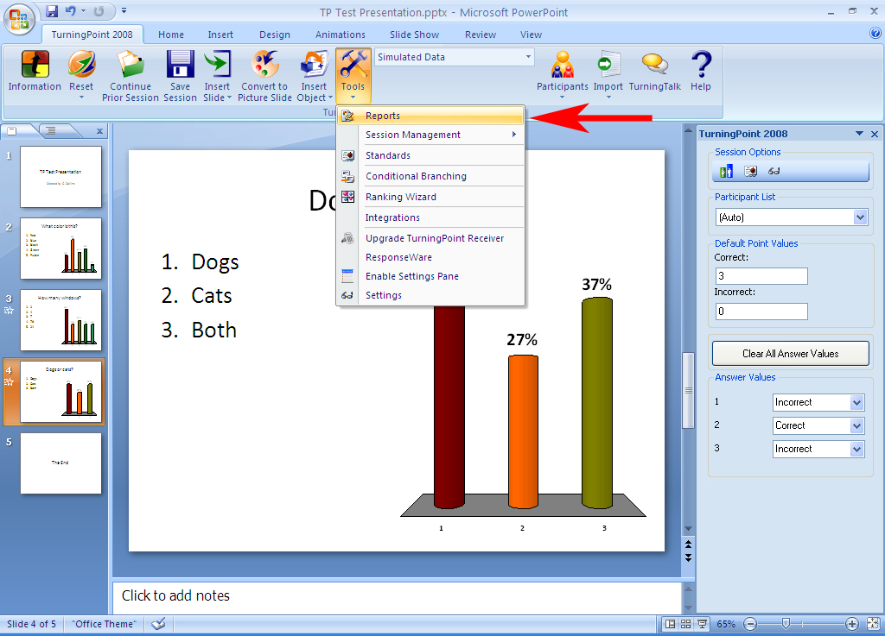
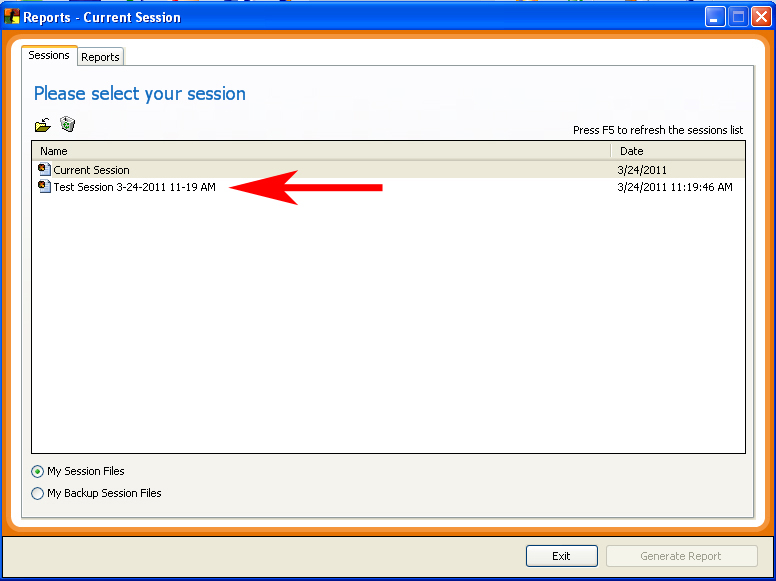
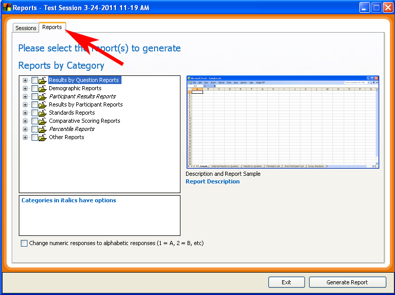
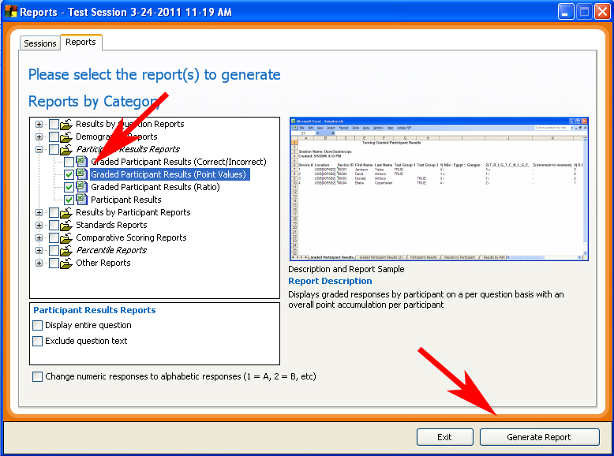
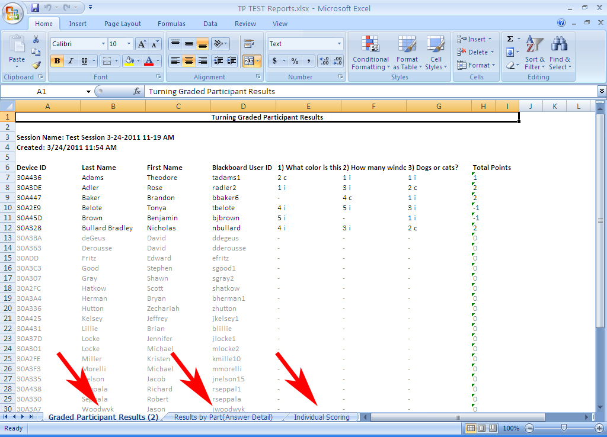

Generating Reports from Session files in TurningPoint:
Student responses during a TurningPoint Session are saved as Session Data. The two main ways to interpret Session Data for evaluation and grading purposes are:
- TurningPoint Reports
- Exporting to Blackboard
TurningPoint allows you to generate multiple types of reports from your session data that you have collected in class. It will be up to you to choose what reports to use based on how you manage your course’s graded data. A Report can be generated as long as the Session data file exists on your computer.
How to Generate a Report:
- Open TurningPoint and click on the “Tools” tab on the TurningPoint ribbon. Select “Reports”.

- The “Reports” window will open and will display a list of all the Sessions stored in the default Session folder within your My Documents folder (this is the default storage folder for TurningPoint). If the Session that you wish to generate a Report from is stored in a different location click on the Open Folder icon on the Reports window, navigate to the Session file and click Open. Your Session will then be automatically copied to the default Session folder and will then appear in the list of saved Sessions in the Reports window.

- After you have highlighted the saved Session file in the Reports window, click on the “Reports” tab located near the top-left of the Reports window. The Reports tab will appear displaying a list of Report options.

- Determine what style of Report you would like to generate based on what kind of data assessments you require. TurningPoint allows you to generate as many different Reports as you wish. Select all appropriate Reports and click the “Generate Report” button at the lower right hand side of the screen.

- TurningPoint processes the Session data and generates a Microsoft Excel spreadsheet. In this example we created a three Participants Results Reports. Multiple Reports are displayed in separate tabs within the spreadsheet.
